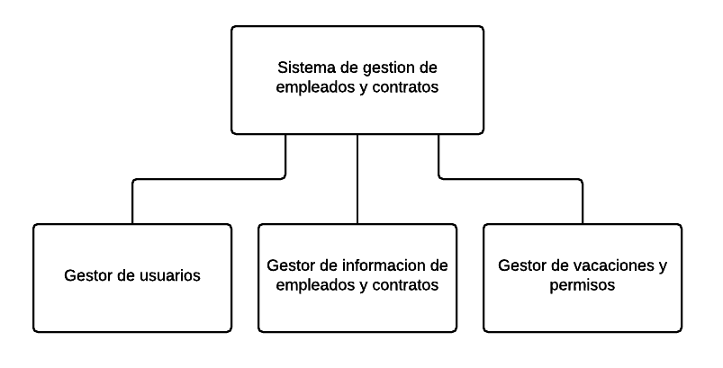

Elaborado por Luis Hernandez
Es una agencia de viajes que se encarga de promover y gestionar el turismo en Venezuela
Desarrollar el Sistema automatizado Gestor de Empleados y Contrataciones para la empresa CentroVenezolano C.A
En esta fase los clientes realizan las historias de usuario y los desarrolladores definen las herramientas a utilizar
Durante esta fase se refinan, ordenan y clasifican las historias de usuarios realizadas por el cliente
En esta fase se decide el numero de iteraciones necesarias para culminar el desarrollo del sistema
En esta fase el producto sale de un ambiente de desarrollo a uno de produccion.
Durante esta fase se pueden agregar nuevas funcionalidades al sistema
Esta fase define la culminacion del proyecto
Durante esta fase se realizaron las historias de usuario y se definieron las herramientas a utilizar para el desarrollo del sistema
En esta fase se refinaron, organizaron y priorizaron las historias de usuario construidas por el cliente
En esta fase teniendo las historias de usuario bien definidas se procedió a definir el número de iteraciones necesarias para la entrega del proyecto
En esta fase se decidió llevar el sistema a un entorno de producción, pero antes el sistema se sometió a una serie de pruebas
Mientras se encontraba una versión del sistema en producción, la gerencia de la organización decidió agregarle nuevas características al sistema
Una vez desarrolladas las historias de usuario y los requerimientos del sistema fueron completados se procedió a elaborar la documentación correspondiente para el uso y mantenimiento del sistema
Gestión de información de empleados
Gestión de vacaciones
Gestión de contratos
Diagrama de caso de uso del administrador
MODELO ENTIDAD RELACION
MODULOS DEL SISTEMA
SUB MODULOS DEL GESTOR DE USUARIO
SUB MODULOS DEL GESTOR DE EMPLEADO Y CONTRATOS
SUB MODULOS DEL GESTOR DE VACACIONES Y PERMISOS
PANTALLA PRINCIPAL DEL SISTEMA
LISTADO DE EMPLEADOS
PERMISOS DE EMPLEADOS
VACACIONES DE EMPLEADOS
NUEVO CONTRATO
DETALLE EMPLEADO
NUEVO PERMISO
Por motivos de tiempo, el modelo entidad relación fue normalizado hasta su tercera forma normal, sin embargo es recomendable llevarlo por lo menos a una quinta forma normal para evitar aún más la redundancia de datos.
Debido a que la ejecución del sistema es completamente en local no se hizo uso de zonas desmilitarizadas ni de firewalls, sin embargo si el sistema quiere ser adaptado a un ambiente con acceso del mundo exterior es recomendable el uso de zonas desmilitarizadas y un mayor control en la parte de seguridad para acceder al sistema.
Debido a que la ejecución del sistema es completamente en local las validaciones para la conexión de los sockets, no se hicieron, esto debido a que la gerencia de sistemas no hizo hincapié en realizarlas, sin embargo si se quiere dar acceso del mundo exterior es recomendable agregar un mecanismo de seguridad como la autenticación por token para validar las conexiones de los sockets.